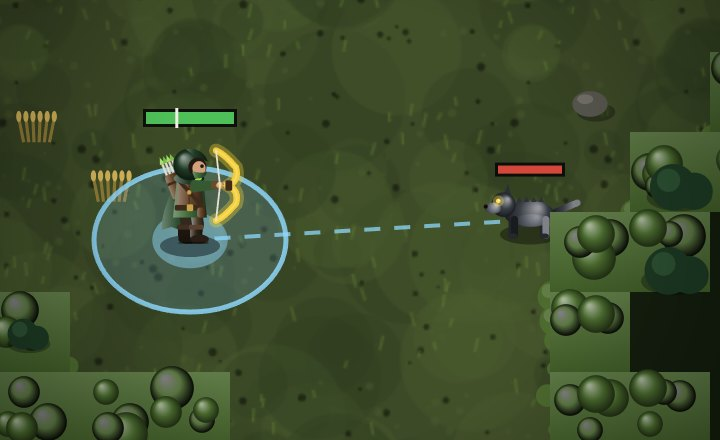
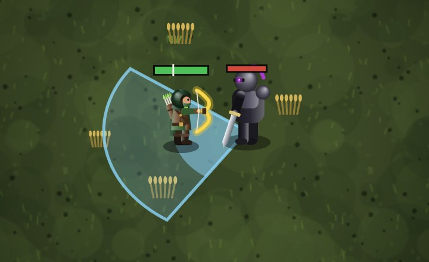
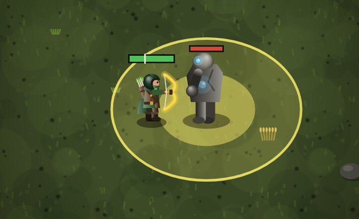
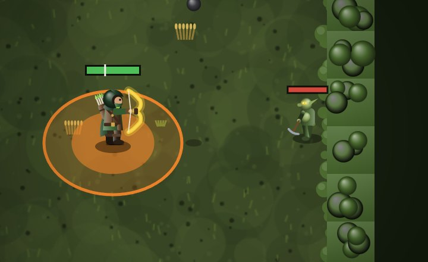
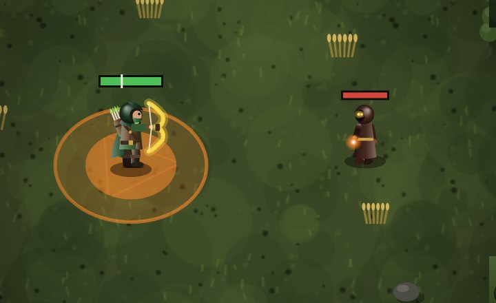

Combate
Como o herói ataca, como as criaturas machucam e o que reduz o dano.
Ataque normalDano ao longo do tempoCríticoTipos de danoArmadura e resistênciasGolpes em áreaEsquivaVida e morte
Ataque normal
- Botão grande no canto (ou clique/segure o mouse no mapa no PC). Um golpe a cada 2 segundos; segurar repete sozinho.
- O golpe vai no alvo escolhido (toque nele) se estiver ao alcance; senão na criatura mais perto ao alcance; senão para onde o herói olha.
- Cada golpe é forte: o dano é multiplicado por 2 s × velocidade de ataque, então atacar mais rápido continua valendo.
- O herói para um instante para golpear. Esquivar antes do golpe sair devolve a recarga.
- Arqueiro: flecha. Guerreiro: golpe de espada à frente. Mago: brasa de fogo.
Dano ao longo do tempo
- O dano aparece em números verdes (veneno), vermelhos (sangramento) ou laranja (queimadura) em cima da criatura.
- A barra de vida da criatura mostra, mais clara, quanto ainda vai sair do dano ao longo do tempo.
- As ultimates (Explosão de Praga, Ruptura, Inferno) detonam na hora uma parte do que já está na criatura.
- Sangramento dói 50% mais enquanto a criatura anda.
Crítico
Todo herói começa com 5% de chance de crítico e 150% de dano crítico. Itens aumentam (chance máxima 75%). O crítico vale para golpes diretos; o número aparece amarelo com "!".
Os 4 tipos de dano
Toda criatura causa um destes tipos. Só existem esses quatro:
Armadura e resistências
Todo dano que o herói leva passa por três reduções, uma depois da outra:
- Armadura: reduz armadura ÷ (armadura + 40 + 8 × nível da criatura). Contra criaturas fortes a mesma armadura protege menos.
- Resistência do tipo: reduz a porcentagem da resistência ao tipo do golpe (máximo %).
- Couraça do Guerreiro: mais 15% de redução, só para ele.
Quanto do dano a armadura corta contra criaturas de cada nível.
Golpes em área das criaturas
Muitas criaturas têm, além do ataque normal, um golpe em área que marca o chão antes. Quem ainda estiver dentro quando a marca termina leva 2,5 vezes o dano normal. A marca tem a cor do tipo de dano.
- Com o golpe pronto e você ao alcance, a criatura tem % de chance de usar. Se não usar, só tenta de novo depois de segundos.
- Cone e pisão só saem com você encostado nela. Elites marcam uma área 20% maior.
- Se a criatura morrer antes, pulo, cone e pisão não saem.





Esquiva
- Durante a esquiva o herói não leva dano ("Esquivou").
- Vai para onde você manda andar; no PC, com espaço e sem WASD, vai para o mouse; senão, para longe da criatura mais perto.
- Celular: botão azul à esquerda do leque ou dois toques rápidos no mapa.
- A recarga diminui com os atributos de recarga das habilidades.
Vida, cura e morte
- Sem levar dano por 3 segundos, o herói recupera 2% da vida por segundo.
- Roubo de vida cura uma parte do dano causado.
- Na vila a vida enche.
- Morrer: perde 10% do ouro e volta para a vila. Na Masmorra, perde também a Pedra.
- Em Opções você escolhe a vida em que o herói volta sozinho para a vila (10–90%) e se volta quando a mochila encher. A marca branca na barra de vida mostra esse limite.
- A Sanguessuga cura 60% do dano que causa em você.